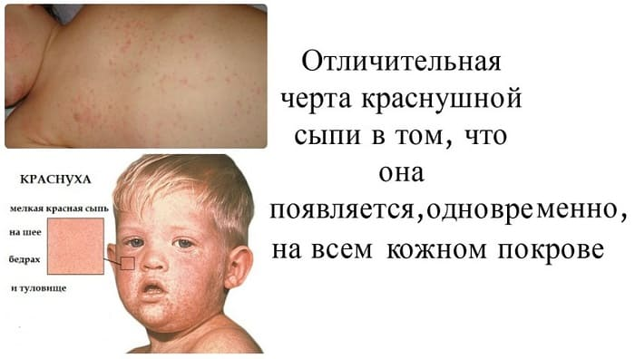
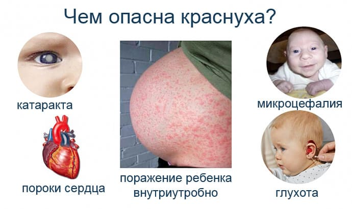

Лет 150 назад ее вообще считали легкой корью. И этим почти все сказано – тоже заразная, тоже появляются и сыпь, и насморк, и повышение температуры. Но все как-то не по-настоящему: температура тела не очень высокая, сыпь бледная и необильная, глазки покраснели чуть-чуть, насморк – так себе, голова болит не сильно, а еще чаще не болит вообще.
Как и корь, передается краснушный вирус воздушно-капельным путем, а попадая в организм человека, поражает так называемую лимфоидную систему (лимфоузлы, селезенка). С этим связано появление наиболее типичного (кроме сыпи, разумеется) признака краснухи – увеличения лимфоузлов, которое наиболее выражено на задней поверхности шеи и на затылке. Сыпь при краснухе розовая, пятнышки значительно мельче, чем при кори, и почти никогда не сливаются. Появляется сыпь в первую очередь на лице, но затем быстро распространяется по всему телу (не как при кори – за 2–3 дня, а всего за несколько часов). Держится сыпь не более трех дней и исчезает, не оставляя следов.

Больной ребенок заразен за день до и в течение 5 дней после появления сыпи.
В подавляющем большинстве случаев краснуха протекает легко, не дает осложнений и, что вполне естественно, не требует никакого лечения.
Что необходимо знать:
Вирус краснухи исключительно опасен для беременных женщин, поскольку, помимо пристрастия к лимфоидной системе, способен весьма серьезно поражать эмбриональные ткани. Угрозу представляет не только заболевание краснухой будущей матери, но даже просто контакт с больным. Опасность рождения ребенка с серьезными пороками развития особенно велика при заражении плода в первые 14 недель беременности, после этого срока и риск заражения, и вероятность тяжелых последствий снижается.

Даже если женщина ранее болела краснухой, риск существует все равно! Поэтому при любом контакте с больным краснухой немедленно обратитесь к вашему врачу, в том, разумеется, случае, если вы беременны.
Е.О.Комаровский. "Здоровье ребенка"